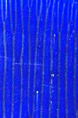
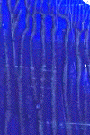
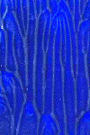
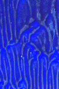
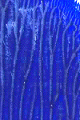

| Here is an experiment with reprocessing, replacing the paper in the same direction each time. |
| We see a picture processed once, then similarly prepared pictures reprocessed 1 through 4 times. |
| Click each picture for a magnified view in a new window. |
|  |  |  |  |  |
| The number of branches off the main branch are 4, 7, 11, 15, and 17 for the original and the first four reprocessings. |
| In each of these, the ridge-coalescing process that accounts for the formation of the branches is played on the background of a surface already ridged from the previous experiment. |
| Certainly, applying pressure to flatten the papers each time eliminates some of these effects, but not all of them. |
| What we see here is a result of the paint's memory of its earlier ridges. |
Return to Tanja Geis' experiments.